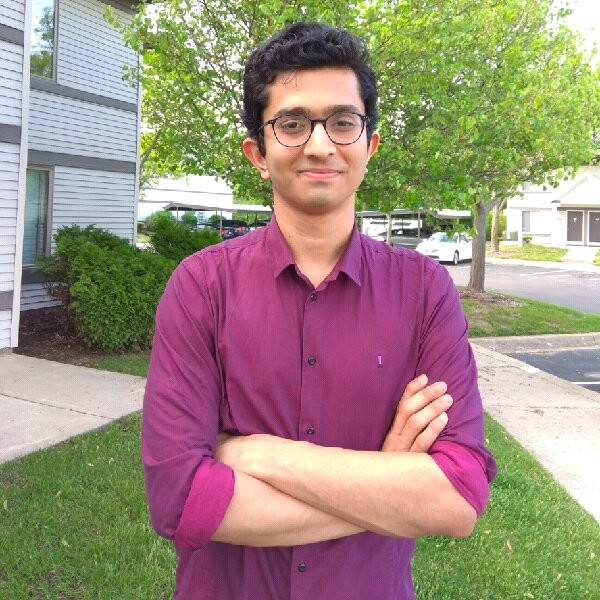
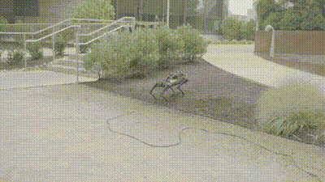
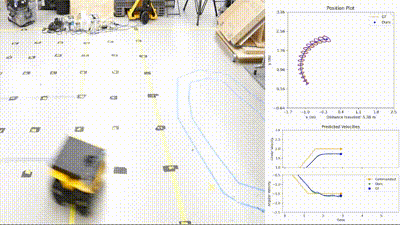
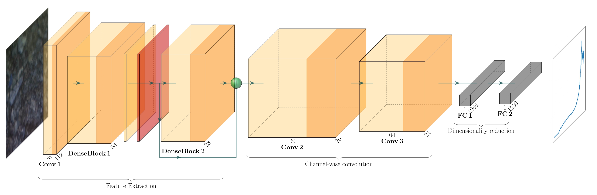
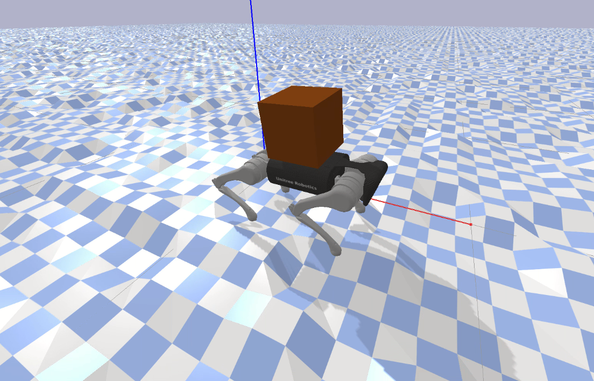
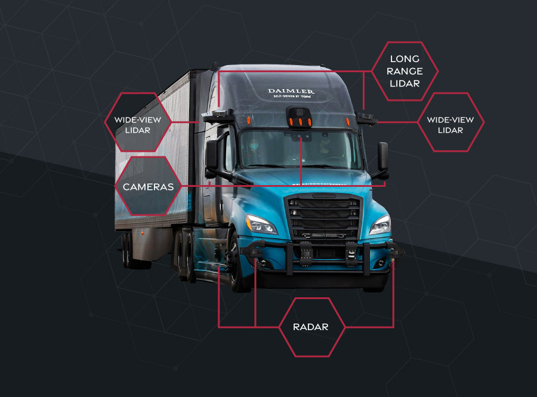
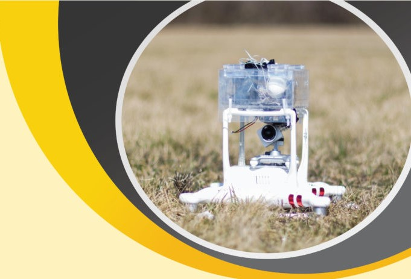
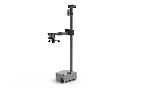

|
Ananya Trivedi Hello.. My name is Ananya Trivedi. I completed my M.S. in Electrical & Computer Engineering at the University of Michigan, where I focused on signal processing and control systems. Following this, I worked at Torc Robotics as a Motion Planning & Controls Software Engineer, developing algorithms for high-level decision-making and path planning in autonomous driving systems. Currently, I am a Ph.D. student and Research Assistant in the RIVeR Lab at Northeastern University, where I focus on robust motion planning and control for robotic systems under uncertainty. |
 |
{kind=link}
ProjectsMy research centers on developing robust, computationally efficient, and verifiable algorithms for motion planning and control under uncertainty. By integrating data-driven approaches with stochastic optimal control, I aim to create principled methods that deliver reliable performance across diverse robotic platforms. |
|  |
Chance-Constrained Convex MPC for Robust Quadruped Locomotion Under Parametric and Additive Uncertainties
Ananya Trivedi, Sarvesh Prajapati, Mark Zolotas, Michael Everett, Taşkin Padır Under review for IEEE RA-L Framework for safe, adaptable quadrupedal locomotion, modeling disturbances from terrain and load variability. Project Page / Code / Video / arXiv |

|
Data-Driven Sampling-Based Stochastic MPC for Skid-Steer Mobile Robot Navigation
Ananya Trivedi, Sarvesh Prajapati, Anway Shirgaonkar, Mark Zolotas, Taşkin Padır
IEEE ICRA 2025
Gaussian Process-enhanced dynamics with chance-constrained MPPI enable uncertainty-aware path-following and obstacle avoidance across diverse terrains. Project Page / Code / Video / arXiv |
|  |
A Probabilistic Motion Model for Skid-Steer Wheeled Mobile Robot Navigation on Off-Road Terrains
Ananya Trivedi, Mark Zolotas, Adeeb Abbas, Mark Zolotas, Sarvesh Prajapati, Taşkin Padır
IEEE ICRA 2024, IEEE ICAA 2023 (Workshop)
A data-driven dynamic model for skid-steer robots leverages Gaussian Process Regression to improve motion prediction across varied terrains. |
|  |
Predictive Mapping of Spectral Signatures from RGB Imagery for Off-Road Terrain Analysis
Sarvesh Prajapati,, Ananya Trivedi, Bruce Maxwell, Taşkin Padır
IEEE ICRA 2024, Workshop on Resilient Off-road Autonomy
RS-Net maps RGB images to spectral signatures for low-cost, accurate terrain characterization in off-road robot planning. |
|  |
Online Refinement of Uncertainty Sets for Robust MPC of Quadrupedal Robots Using Convex Cone Programming
Ananya Trivedi, Sarvesh Prajapati, Mark Zolotas, Taşkin Padır
IEEE ICRA 2024, Workshop on Advancements in Trajectory Optimization and Model Predictive Control for Legged Systems
A framework for robust quadruped locomotion under uncertain payloads, uneven terrains, and frictional variability. |
|  |
Motion Planning & Controls Software Engineer -- Torc Robotics
|
|  |
Atmospheric Sensing with Miniaturized Robotic Vehicles -- MDP
|
|  |
Supporting Aging In Place Through Multimodal Sensing
|